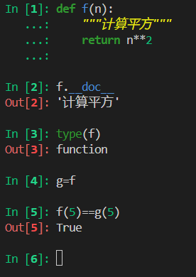
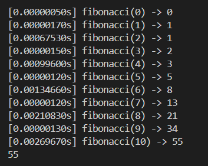

函数即对象
约 1065 个字 104 行代码 预计阅读时间 5 分钟
Python 不是纯粹的函数式语言，但它支持多种函数式编程特性。
函数是一等对象
通常把“一等对象”定义为： * 在运行时创建 * 能赋值给变量或者数据结构的元素 * 能作为参数传递给函数 * 能作为函数的返回结果
把函数视作对象
Python的函数就是对象

高阶函数
接受函数作为参数或者把函数作为结果返回的函数是高阶函数，典型代表就是内置的map和filter
匿名函数
使用lambda关键字可以创建匿名函数，然而受Python简单语法的限制，lambda函数主体只能是纯粹的表达式，也就是不能有while、try等python语句。除了作为参数传递给高阶函数，Python很少使用匿名函数。
用户定义的可调用类型
既然Python中的函数可以当作对象，那么为什么对象不能当作函数调用？为此，只需要实现实例方法__call__
import random
class BingoCage:
def __init__(self,items):
self._items = list(items)
random.shuffle(self._items)# 打乱顺序
def pick(self):
try:
return self._items.pop()
except IndexError:
raise LookupError('pick from empty BingoCage')
def __call__(self):
return self.pick()
BingoCage本身可以当作函数调用，相当于是BingoCage.pick()的快捷方式
装饰器和闭包
装饰器
基础知识
装饰器是一种可调用对象，其参数是另外一个函数（被装饰的函数）。装饰器可能会对被装饰的函数做一些处理，然后返回函数，或者把函数替换成另一个函数或可调用对象。比如：
@decorate
def target():
print('running target()')
# 上述写法等价于以下代码：
def target():
print('running target')
target = decorate(target)
作用域规则
Python的规则和C/C++有一点点区别，比如
#include<iostream>
using namespace std;
int b = 6;
void f(int a){
cout << a << ' ';
cout << b << endl;
int b = 9;
}
int main(){
f(3);
}
f里面的int b定义的局部变量虽然会覆盖全局的b，但是全局的b先被输出了，所以结果是3 6。但是换成python，结果就不一样了
这段代码会直接报错，错误是UnboundLocalError: cannot access local variable 'b' where it is not associated with a value，这说明Python判定b是局部变量，会尝试从局部获取值，但是一开始又没有赋值，所以会直接报错。
这并不是bug，而是一种设计选择：Python不要求声明变量，但是会假定在函数主体中赋值的变量是局部变量。这比JS的行为要好，JS也不要求声明变量，但是如果忘记把变量声明为局部变量（使用var），则可能在不知情的情况下破坏全局变量。
此外，Python其实针对上述问题提供了解决方案，但逻辑和C/C++还是有区别，即使用global指定b为全局变量，注意b运行后的值是9
闭包
闭包其实就是延伸了作用域的函数，包括函数主体中的非全局变量和局部变量。
# 动态返回平均值
def make_averager():
series = []
def averager(new_value):
series.append(new_value)
total = sum(series)
return total/len(series)
return averager
# 调用
avg = make_averager()
avg(10)
avg(11)
avg(12)
series是make_averager函数的局部变量，但是我们其实只调用了一次make_averager，当调用avg的时候make_averager已经返回，局部作用域已经消失，series就变成了一个自由变量（即未在局部作用域中绑定），但是它是仍然存在的。
也许你会觉得上面那段代码写的并不好，为什么要用一个列表存？直接记录总和以及总数量不行吗？还真不行
def make_averager():
count = 0
total = 0
def averager(new_value):
count += 1
total += new_value
return total / count
return averager
avg = make_averager()
avg(10)
UnboundLocalError: cannot access local variable 'count' where it is not associated with a value，原因是在average中对count赋值了，这会导致count被认为是局部变量，就不再是自由变量，也就不在闭包中了。为了解决这个问题Python提供了nonlocal关键字，它的作用是把变量标记为自由变量，如果为nonlocal声明的变量赋予新值，那么闭包中绑定的值也会随之更新。
实现一个装饰器
# 可以打印出函数调用的耗时，接受的参数和返回的值
import time
import functools
def clock(func):
@functools.wraps(func)
def clocked(*args,**kwargs):
t0 = time.perf_counter()
result = func(*args,**kwargs)
elapsed = time.perf_counter() - t0
name = func.__name__
arg_lst = [repr(arg) for arg in args]
arg_lst.extend(f'{k}={v!r}' for k,v in kwargs.items())
arg_str = ','.join(arg_lst)
print(f'[{elapsed:0.8f}s] {name}({arg_str}) -> {result!r}')
return result
return clocked
标准库中的装饰器
functool.cache
functool.cache装饰器实现了备忘(memoization)，这是一项优化技术，能把耗时得到的结果保存起来，避免传入相同的参数时重复计算。
# 一个例子，计算斐波那契数
import functools
# 这个是上面自己实现的记录函数执行信息的装饰器
from clockdeco import clock
@functools.cache
@clock
def fibonacci(n):
if n<2:
return n
return fibonacci(n-2) + fibonacci(n-1)
if __name__ == '__main__':
print(fibonacci(10))
clock装饰器返回的
